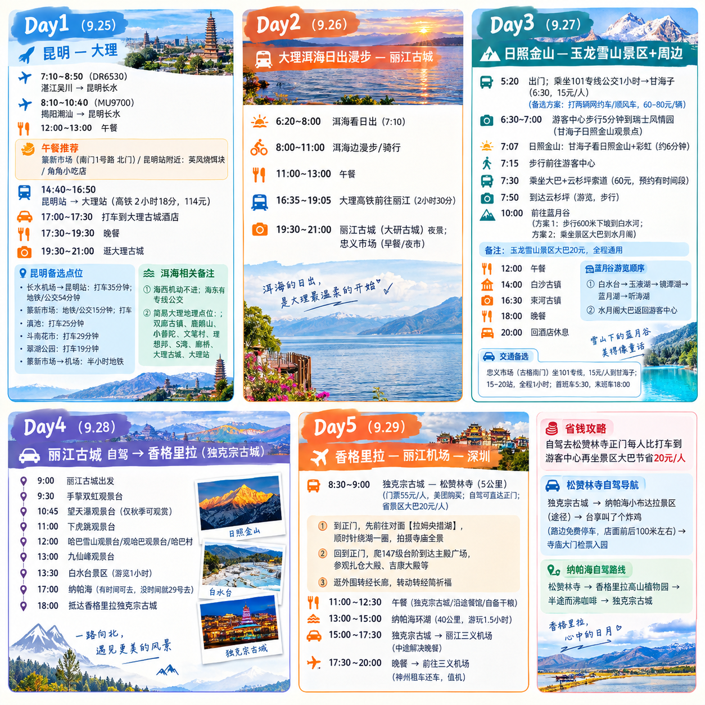

昆明 → 丽江 → 香格里拉 · 5人同行

| 日期 | 行程 | 交通 | 距离 | 耗时 |
|---|---|---|---|---|
| 9.25 | 湛江/揭阳 → 昆明 → 篆新市场/昆明站 → 大理古城 | ✈️🚄 | ~1500km | ~2.5h+2h |
| 9.26 | 洱海日出 → 洱海漫步/骑行 → 高铁丽江 → 丽江古城夜景 | 🚄 | ~200km | ~2.5h |
| 9.27 | 甘海子日照金山 → 云杉坪 → 蓝月谷 → 白沙古镇 → 束河古镇 | 🚌 | ~30km | ~1h |
| 9.28 | 丽江古城 → G214国道 → 虎跳峡观景台 → 白水台 → 纳帕海 → 独克宗古城 | 🚗 自驾 | ~180km | ~8h |
| 9.29 | 松赞林寺 → 拉姆央措湖 → 纳帕海环湖 → 丽江三义机场 → 深圳 | 🚗✈️ | ~180km | — |
| 城市/地点 | 海拔 | 9月底气温 | 穿搭建议 |
|---|---|---|---|
| 昆明 | ~1890m | 15-22°C | 长袖+薄外套 |
| 大理 | ~1970m | 12-21°C | 长袖+薄外套，早晚加厚 |
| 丽江古城 | ~2400m | 10-20°C | 冲锋衣/卫衣 |
| 云杉坪 | ~3240m | 5-12°C | 冲锋衣+抓绒 |
| 玉龙雪山顶 | ~4680m | -5~5°C | 羽绒服必备（景区可租） |
| 香格里拉 | ~3300m | 5-18°C | 羽绒服+保暖内衣 |
两位年轻人各背一个双肩包：
包1（体力好）
包2（细心）
长辈3人：轻装出行，只带随身小包（手机、钱包、身份证、常用药）